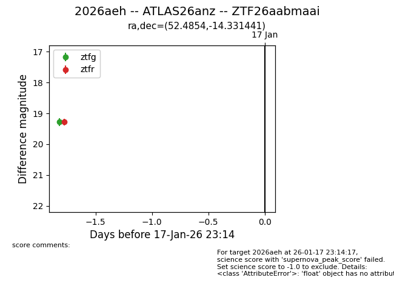
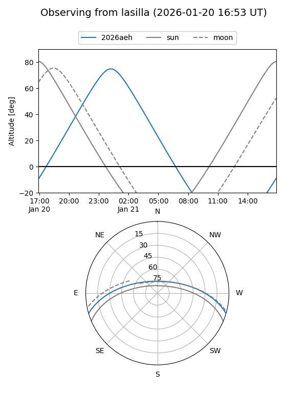
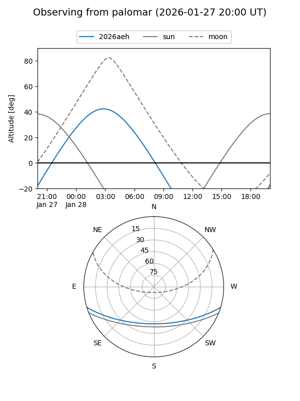
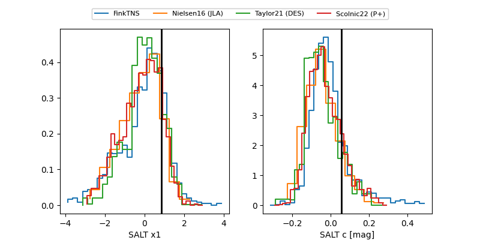

2026aeh
Target 2026aeh at 2026-01-28 14:56
Aliases and brokers:
FINK: link
Lasair: link
ALeRCE: link
TNS: link
YSE: link
alt names
ZTF26aabmaai (ztf,fink_ztf)
2026aeh (tns,yse)
ATLAS26anz (atlas)
Coordinates:
equatorial (ra, dec) = 52.4854,-14.33144
equatorial (HMS+DMS) = 03:29:56.50,-14:19:53.19
galactic (l, b) = (201.9437,-50.98930)
Flags:
Photometry:
last ztfg=18.63, ztfr=18.75
3 ztfg, 3 ztfr detections
Lightcurve

Visibility


Additional plots
